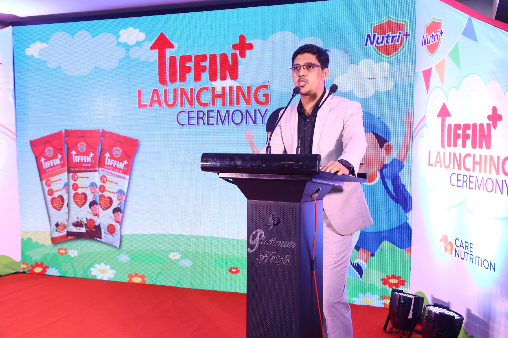
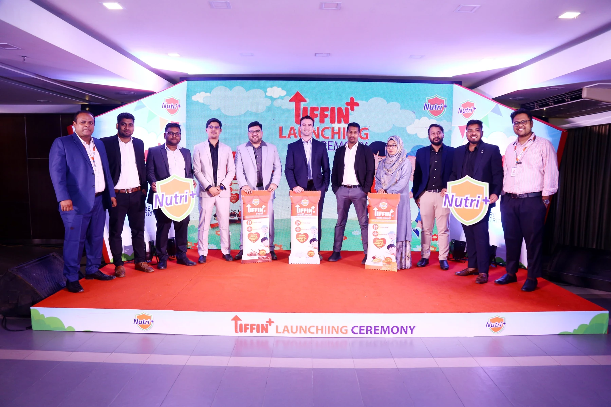
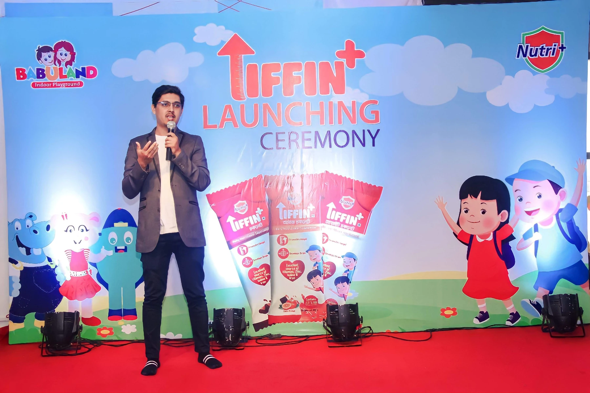
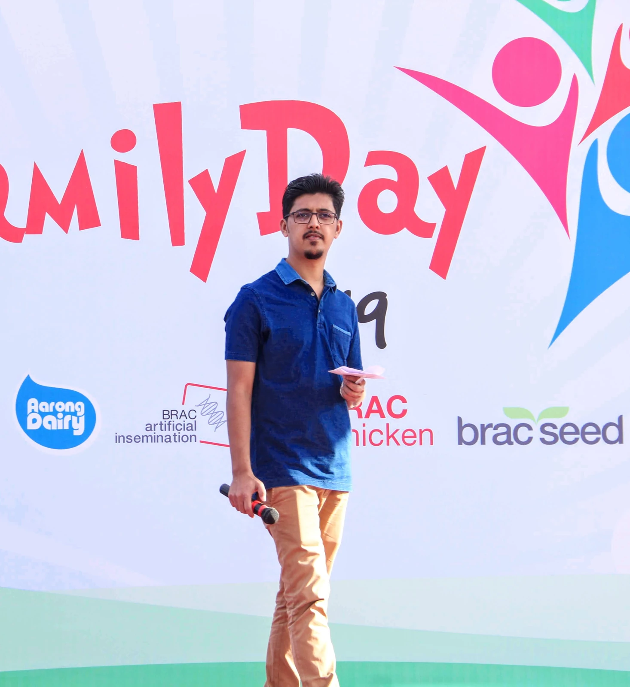
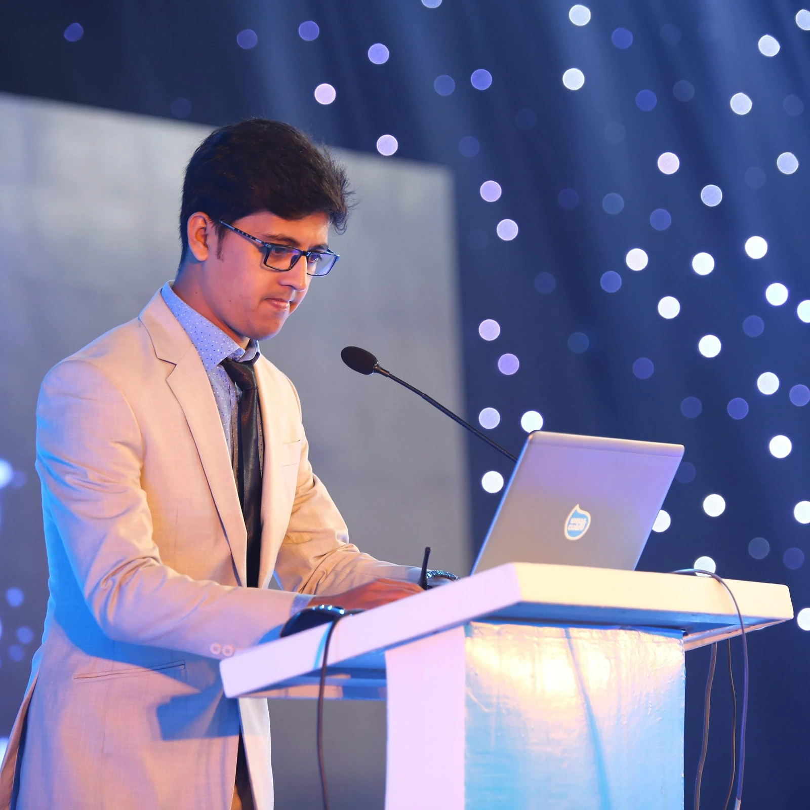
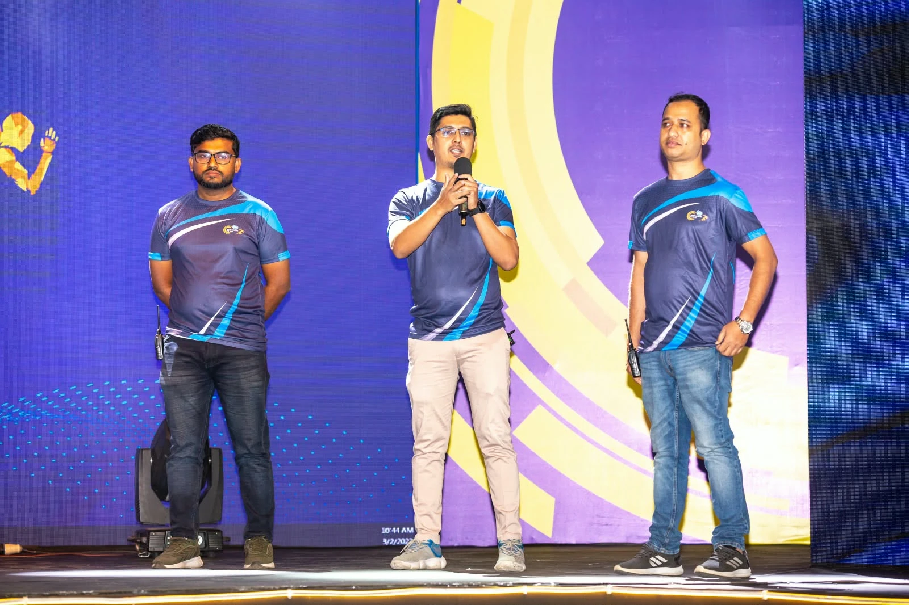

WORK / EVENTS & ACTIVATIONS
Brand ideas.Real-world moments. Brand relaunches, product launch experiences and contributions to corporate events, documented through selected photographs.
CARE NUTRITION / BRAND RELAUNCH
Nutri+ Brand Relaunch A brand relaunch brought to life through a stage presentation, product unveiling and coordinated team participation.
My contribution Brand and digital marketing during my Care Nutrition tenure, including launch communication and coordination.
⛶ ← Previous 1 / 6 Next →
CARE NUTRITION / TIFFIN+ / FORMAL LAUNCH
Tiffin+ Launch — Platinum Hotels The formal launch phase, featuring a brand presentation and the team introducing the product range.
My contribution Brand positioning, launch communication and coordinated go-to-market execution.

⛶ ← Previous 1 / 4 Next →

CARE NUTRITION / TIFFIN+ / CONSUMER LAUNCH
Tiffin+ Launch — Babuland A separate consumer-facing phase of the Tiffin+ launch, presented in a family-oriented setting.
My contribution Launch communication and coordination during my Care Nutrition role.

⛶ ← Previous 1 / 2 Next →
CARE NUTRITION / ACTIVATIONS & MARKET VISITS
From the launch stagethe market. Selected photographs of market visits, product discussions, promotional booths and launch-team moments during my Care Nutrition tenure.
⛶ ← Previous 1 / 7 Next →
Market visits Product demonstrations Consumer activations Launch events
CORPORATE EVENTS / TEAM CONTRIBUTION
Part of the team.Behind the experience. Selected moments from company events where I contributed as a core member of the organizing team.

⛶ BRAC Family Day Core Organizing Team Member

⛶ Aarong Dairy corporate event Core Organizing Team Member

⛶ Corporate stage session Core Organizing Team Member
MORE EVENT EXPERIENCE
Aarong Dairy events & activations My experience also includes co-leading events, activations and three trade fairs, alongside digital quiz contests. Further case details can be added as supporting material becomes available.